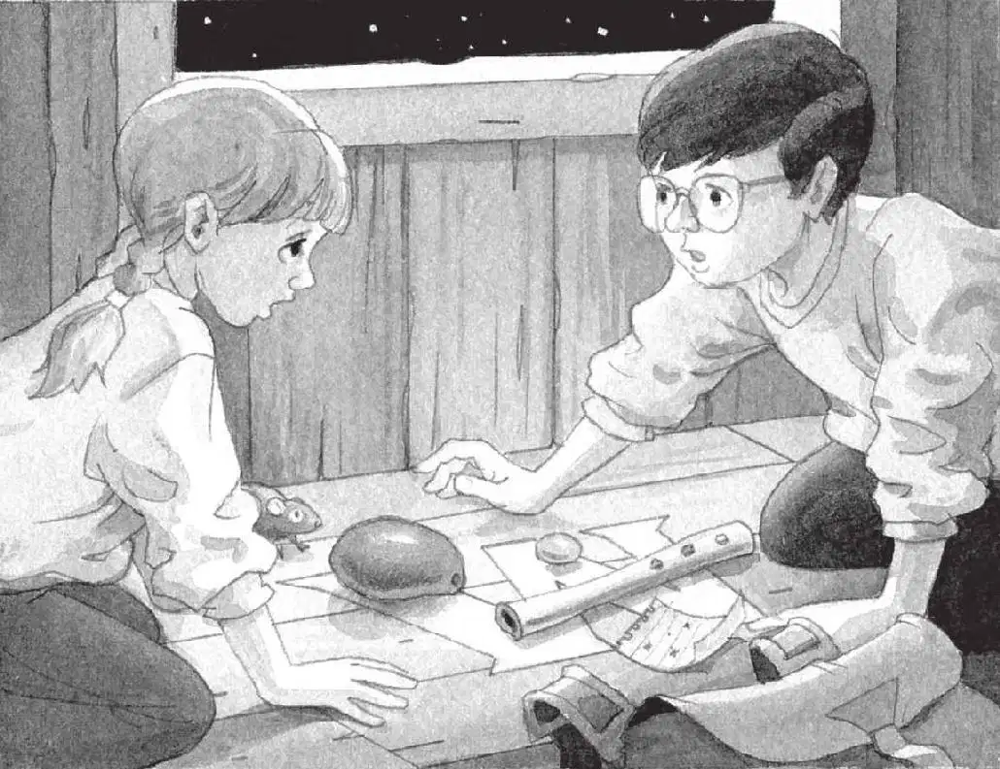

“那个人是谁呀？”杰克问，“他的地图代表了什么呢？”
“不知道。”安妮回答，“我们来看看它是不是管用吧。”
杰克深深地吸了口气说：“是啊，最好赶紧回去吧。我的氧气好像已经用完了，我感觉呼吸越来越困难。”
“我也是。”安妮说。
“走慢一点儿，不要大喘气。”杰克吩咐道。
他和安妮迈着大步，朝月球基地走去。杰克屏住呼吸，就像在水下一样。
当他们来到那个白色的圆形建筑时，杰克已经憋得快要爆炸了。
安妮按下大门旁边的一个按钮。门滑开了，他们匆匆走进气闸室。大门在他们身后关上，而通向走廊的门随之打开了。
杰克掀开他的面罩，长长地深吸一口气，接着又呼出来。“呼！”
“我们把宇航服脱掉吧。”安妮说。
“好主意。”杰克巴不得赶紧把自己的腿和胳膊解放出来呢。
他们笨手笨脚地走进宇航服存放室，杰克还是感觉身体很沉重。
他和安妮互相解开对方的头盔、手套和靴子，把身上的所有装备都卸掉，然后从臃肿的宇航服里走了出来。
“呼！”杰克松了口气。他摘掉眼镜，揉了揉双眼。
自由的感觉多么美妙啊，哪怕身体不会再像羽毛一样轻盈。
“快点儿！花生米还在等着我们呢！”安妮说。
安妮领头走下台阶，奔向那间光线明亮的降落舱。
“哇！”她轻声叹道。
杰克看到树屋还在，悬着的心放了下来。他们很快就可以回家了，杰克已经等不及了。
杰克和安妮从树屋的窗户爬了进去。
“我们回来了，花生米！”安妮唤道。
“吱吱！”小老鼠跑向字母M。
“我们想你了！”安妮拍了拍小老鼠的脑袋说，“我们碰到了一个月球人。”
“对不起，花生米，麻烦你挪开一点儿，”杰克说，“我们要把地图放在字母M上面。”
安妮把小老鼠从字母M上轻轻抱开。
杰克把那张星星地图从笔记本上撕下来，放在字母M上面，紧挨着猛犸象骨头、杧果和月光石。
他松了口气，把身子往后一靠，坐在自己的脚后跟上。“把那本宾夕法尼亚的书递给我。”他对安妮说。有了宾夕法尼亚的书，他们才能回家。
没有回音。
杰克转身看着安妮。
“不管用，杰克，”安妮说道，“那本书不在。”
“什么？难道他们要找的M并不是地图？”杰克想。
他们在树屋里四处张望。
“书肯定不在这里。”安妮说。

“哦，糟糕。”杰克的心沉了下去。他拿起星星地图，仔细看了看。
“吱吱，吱吱。”小老鼠从安妮怀里跳出来，重新爬回到那个字母M上。
“我明白了。”杰克恍然大悟。他把手伸进背包，掏出铅笔。
“你在做什么？”安妮问道。
“你知道怎么画星座吗？”杰克说，“就是把所有的星星都连在一起。我们试试看会有什么结果。”
他把星星一颗一颗地连起来，最后所有的星星都连在一起了。
“让我看看。”安妮说。
杰克把纸举起来，让安妮也能看清。
“看上去像一只老鼠。”安妮说。
“是啊。”杰克表示赞同地回应道。
“老鼠星座，有这样的星座吗？”安妮问。
“好像没有……”杰克说。
“吱吱。”
安妮和杰克看着小老鼠。它就站在字母M上。
“哦，我明白了，杰克，”安妮轻声说道，“我好像猜到第四样东西是什么了……”
杰克咧嘴一笑，说：“我也知道了，就是一只……”
“老鼠（Mouse）！”两人异口同声地说。
“吱吱！吱吱！”
“那句咒语可能就是——月光石、杧果、猛犸象骨头、老鼠！”安妮说。
杰克一边依次触摸每样名字以字母M开头的东西，一边小声念叨：“月光石、杧果、猛犸象骨头、老鼠。”
“我们多念几遍，看看会有什么结果。”安妮说。
两人一同念道：
月光石、杧果、
猛犸象骨头、老鼠。
月光石、杧果、
猛犸象骨头、老鼠。
突然，一道明亮的光照亮了整个树屋。
越来越亮，越来越亮。
那么耀眼，令人眩晕。
空气随着亮光旋转。
周围的一切慢慢变得清晰起来。
小老鼠不见了。
站在杰克和安妮面前的，是仙女摩根。